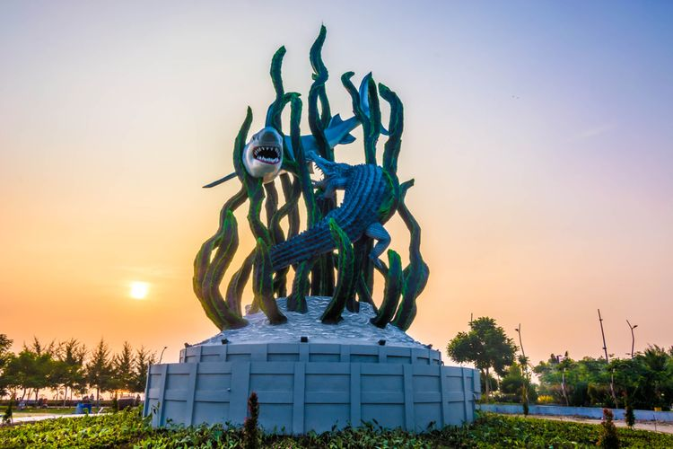
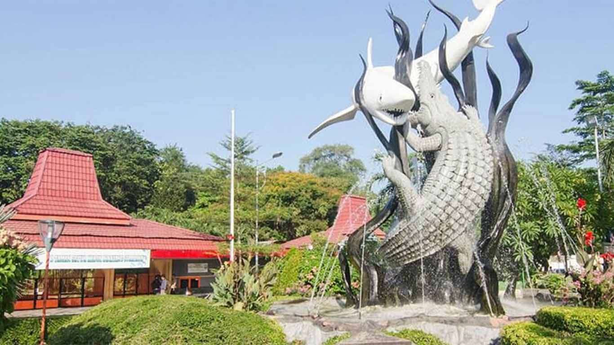
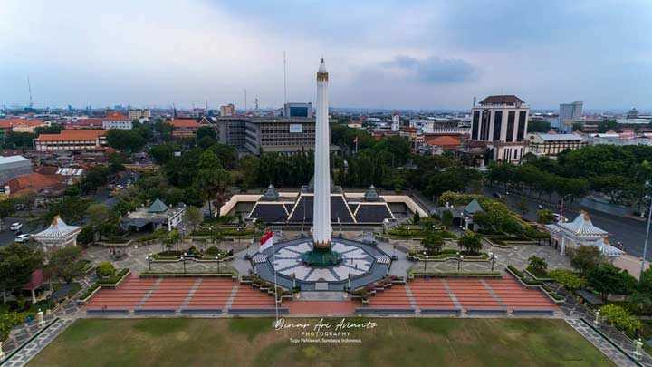
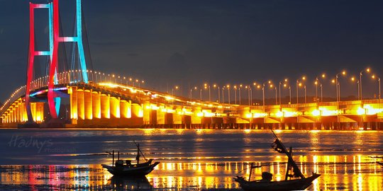

Selamat Datang di Kota Surabaya
KunjungiHistory
Travel

Kebun Binatang Surabaya
Kebun Binatang Surabaya (KBS)adalah salah satu kebun binatang yang populer di Indonesia dan terletak di Surabaya. KBS merupakan kebun binatang yang pernah terlengkap se-Asia Tenggara, di dalamnya terdapat lebih dari 351 spesies satwa yang berbeda yang terdiri lebih dari 2.806 binatang.Jl. Setail No.1, Darmo, Kec. Wonokromo, Kota Surabaya

Tugu Pahlawan
Tugu Pahlawan terletak di pusat kota Surabaya, tepatnya ditengah-tengah diantara Jl.Pahlawan, Jl. Bubutan, Jl. Tembaan, dan Jl. Kebon Rojo. Tepatnya di depan kantor Gubernur Jawa Timur. Letaknya yang mudah dicapai menjadi alasan tempat ini sering dikunjungi. Aneka tumbuhan dan bunga-bunga yang ada di kawasan ini menjadi daya tarik bagi masyarakat Surabaya yang ingin sejenak beristirahat atau menghabiskan suasana pagi dan sore hari dengan sekadar duduk-duduk sambil melihat bangunan-bangunan yang mengingatkan perjuangan masyarakat Surabaya. Para pengunjung tidak dipungut biaya untuk memasuki kawasan Tugu Pahlawan ini. Biaya masuk hanya dikenakan saat akan memasuki Museum 10 Nopember. Menyempatkan diri untuk berkunjung ke Tugu Pahlawan di Surabaya membantu Anda mengenal sebagian sejarah bangsa Indonesia.

Jembatan Suramadu
Jembatan Nasional Suramadu adalah jembatan yang melintasi Selat Madura, menghubungkan Pulau Jawa (di Surabaya) dan Pulau Madura (di Bangkalan, tepatnya timur Kamal), Indonesia. Dengan panjang 5.438 m, jembatan ini merupakan jembatan terpanjang di Indonesia saat ini. Jembatan Suramadu terdiri dari tiga bagian yaitu jalan layang (causeway), jembatan penghubung (approach bridge), dan jembatan utama (main bridge).
Duta Alif Gunawan
Mahasiswa
Surabaya, 26 Mei 2002